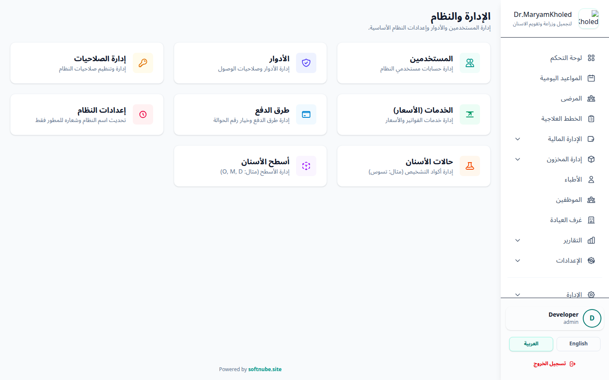
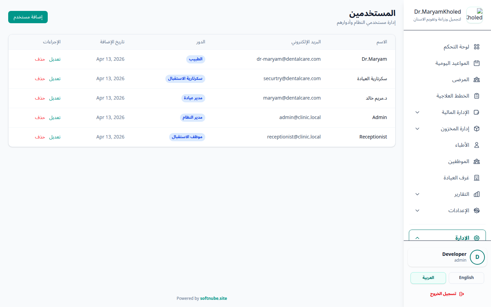
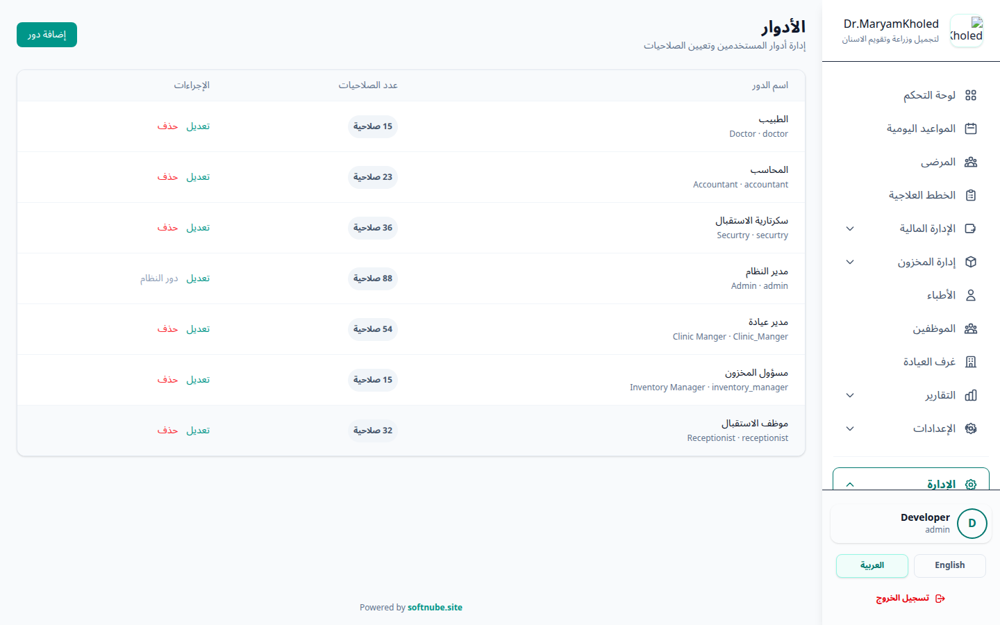
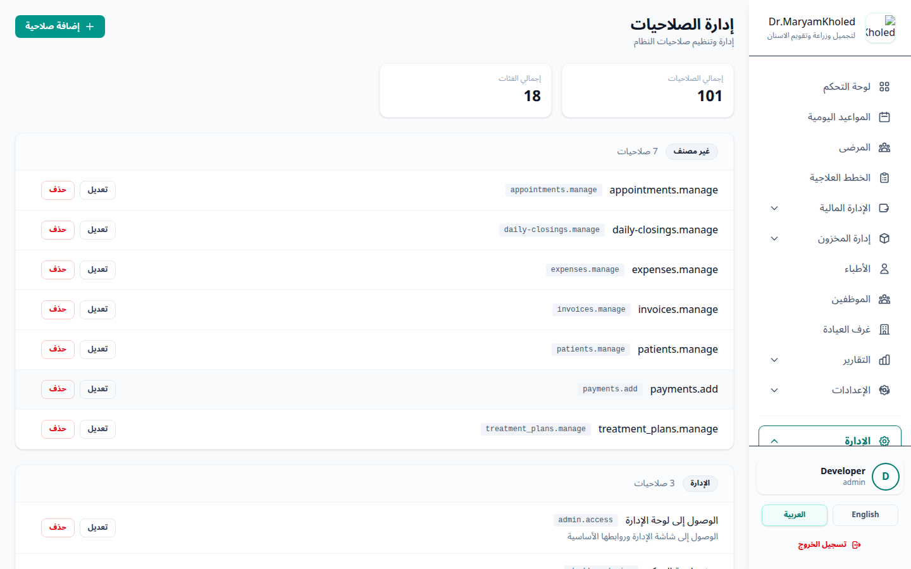
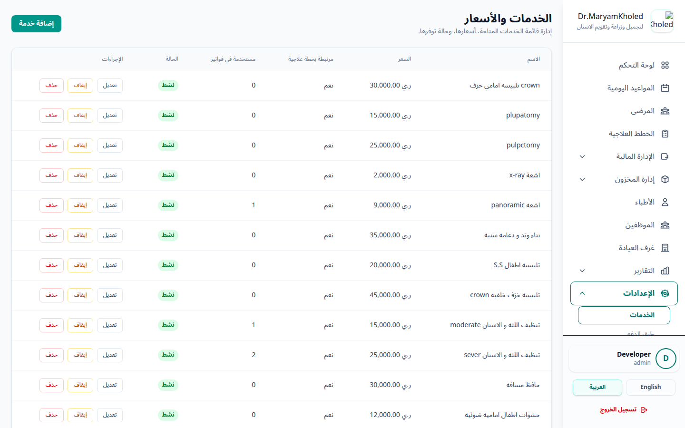
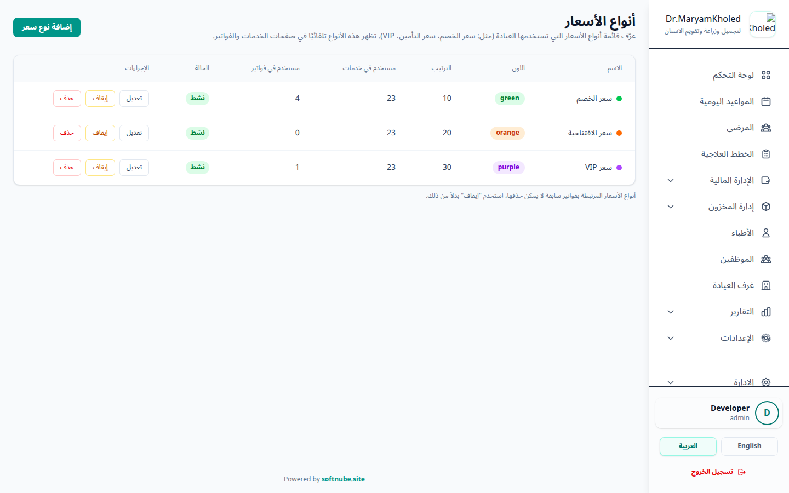
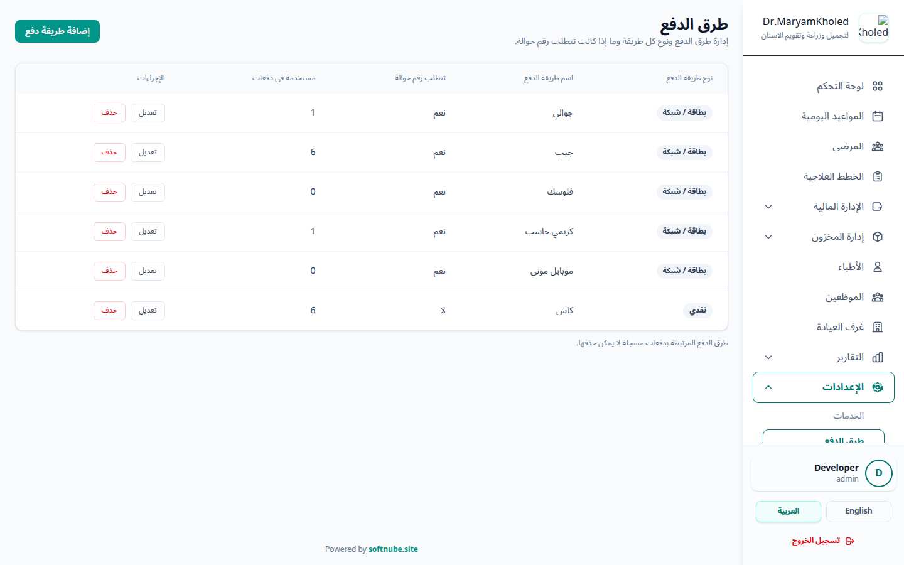
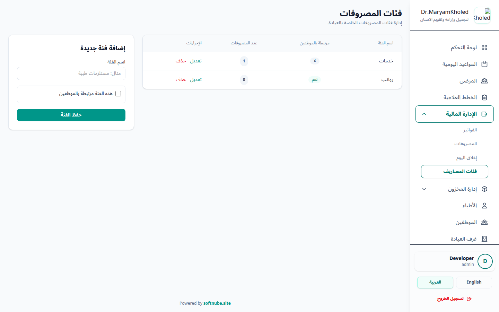
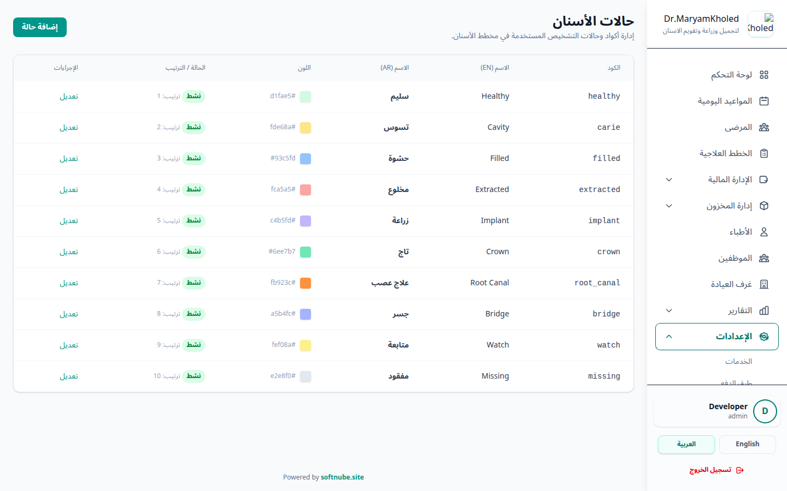

نظرة عامة على الإدارة
تبويب "الإدارة" هو القلب النابض للنظام الذي يسمح للمدراء بالتحكم في البنية التحتية للعيادة مثل إعدادات الخدمات، الأسعار، وإدارة الصلاحيات الشاملة.

المستخدمون (حسابات الدخول)
شاشة "المستخدمون" هي المكان الذي تُنشأ فيه حسابات الدخول لموظفي وأطباء العيادة، ويُسند لكل حساب دوره. لإنشاء مستخدم جديد:
- اضغط "إضافة مستخدم".
- أدخل الاسم والبريد الإلكتروني (يجب أن يكون فريداً).
- أدخل كلمة المرور وأعد كتابتها في حقل التأكيد.
- اختر الدور المناسب من القائمة ليأخذ المستخدم كل صلاحيات ذلك الدور تلقائياً.
- احفظ لتظهر رسالة "تم إنشاء المستخدم بنجاح".

الأدوار (Roles)
بدلاً من منح الصلاحيات لكل موظف على حدة، يجمع النظام الصلاحيات في "أدوار" تُسند للمستخدمين. لإنشاء دور:
- اضغط "إضافة دور".
- أدخل اسم الدور بالإنجليزية واسم الدور بالعربية — كلاهما إجباري (الأدوار ثنائية اللغة).
- حدّد الصلاحيات الممنوحة لهذا الدور من القوائم المصنّفة (مثل: إنشاء فواتير، حذف مواعيد... إلخ).
- احفظ ليصبح الدور متاحاً للإسناد للمستخدمين.

الصلاحيات (Permissions)
للصلاحيات شاشتها المستقلة التي تعرض قائمة الصلاحيات المتاحة في النظام، مصنّفة حسب الفئة (Category). تُستخدم هذه الصلاحيات لاحقاً عند بناء الأدوار في شاشة "الأدوار".

الخدمات الطبية
هنا تُعرّف الخدمات التي تظهر لاحقاً للأطباء وموظفي الاستقبال عند إصدار الفواتير وإنشاء خطط العلاج. لكل خدمة الحقول التالية:
- الاسم (name): اسم الخدمة (يجب أن يكون فريداً).
- السعر (price): سعر افتراضي اختياري للخدمة.
- الحالة (is_active): مفتاح تفعيل/إيقاف الخدمة. الخدمة الموقوفة تبقى محفوظة لكنها لا تظهر للاستخدام عند إصدار الفواتير.
- خدمة خطة علاجية (is_treatment_plan_service): يحدد ما إذا كانت الخدمة تُستخدم ضمن خطط العلاج.
- أسعار الشرائح: يمكن تحديد سعر مستقل للخدمة لكل شريحة أسعار مفعّلة (راجع قسم "شرائح الأسعار").

شرائح الأسعار (Price Tiers)
تتيح "شرائح الأسعار" تعريف أكثر من قائمة أسعار للعيادة (مثل: سعر عام، سعر تأمين، سعر شركة)، بحيث يكون لكل خدمة سعر خاص بكل شريحة. لإدارة الشرائح:
- اضغط "إضافة شريحة".
- أدخل اسم الشريحة (فريد) واختر لوناً مميزاً لها وحدّد ترتيب الظهور.
- فعّل أو أوقف الشريحة عبر مفتاح الحالة (يمكن تبديل الحالة مباشرة من القائمة).
- احفظ، ثم عند تعديل أي خدمة سيظهر حقل سعر لكل شريحة مفعّلة.

طرق الدفع (Payment Methods)
تُعرّف هنا طرق الدفع المتاحة عند تسجيل المدفوعات. لإضافة طريقة دفع:
- اضغط "إضافة طريقة دفع".
- اختر النوع من الأنواع المعرّفة في النظام.
- أدخل الاسم (فريد).
- حدّد ما إذا كانت الطريقة تتطلب رقم مرجعي (has_reference_number) — مثل رقم الحوالة أو رقم العملية.
- احفظ. لا يمكن حذف طريقة دفع استُخدمت سابقاً في مدفوعات.

فئات المصروفات (Expense Categories)
تُستخدم فئات المصروفات لتصنيف مصروفات العيادة عند تسجيلها. لإدارة الفئات:
- أدخل اسم الفئة (فريد) وأضفها.
- حدّد ما إذا كانت الفئة مرتبطة بالموظفين (is_employee_related) مثل الرواتب.
- يمكنك تعديل أو حذف أي فئة من نفس الشاشة.

حالات الأسنان وأسطح الأسنان
تُعرّف هاتان الشاشتان الخيارات التي تظهر للأطباء في مخطط الأسنان (Dental Chart).
حالات الأسنان (Tooth Conditions)
- أدخل الرمز (code) الفريد للحالة.
- أدخل التسمية بالإنجليزية والتسمية بالعربية.
- اختر اللون الذي يمثّل الحالة في المخطط.
- حدّد ترتيب الظهور وحالة التفعيل.
أسطح الأسنان (Tooth Surfaces)
- أدخل الرمز (code) الفريد للسطح.
- أدخل التسمية بالإنجليزية والتسمية بالعربية.
- حدّد ترتيب الظهور وحالة التفعيل.

إعدادات النظام
تتيح هذه الشاشة (لحساب Super User) التحكم في اسم النظام، اسم العيادة، شعار النظام، شعار ترويسة التقارير، ونصوص ترويسة التقرير (يمين/وسط/يسار).
سجل العمليات (Audit Logs)
يعتبر سجل العمليات أداة أمنية ورقابية مهمة تسجل كل شاردة وواردة في النظام. من خلاله يمكنك معرفة:
- من؟ اسم المستخدم الذي قام بالعملية.
- متى؟ التاريخ والوقت الدقيق.
- ماذا؟ نوع العملية (إضافة مريض، حذف فاتورة, تعديل موعد) والبيانات القديمة والجديدة.
تصفية السجل
نظراً لكثرة السجلات، توفّر الشاشة مجموعة من المرشّحات (الفلاتر) لتضييق نطاق العرض:
- نوع السجل (log_name): تصفية حسب نوع/تصنيف العملية.
- الحدث (event): نوع الحدث (إنشاء/تعديل/حذف...).
- المستخدم: اختيار المستخدم الذي نفّذ العملية.
- النطاق الزمني: من تاريخ (date_from) وإلى تاريخ (date_to).
- بحث نصي حر: بحث ضمن وصف العملية وبياناتها.